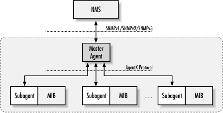

4.5. A Look Ahead
The Internet Engineering Task Force
(IETF) is in the process of defining a standards-track technology for
SNMP agent extensibility (AgentX). As we
defined it earlier, an SNMP agent is software that resides on a
managed device, replying to SNMP requests and generating asynchronous
traps. Information about agent extensibility can be found in RFC
2741, as well as at the AgentX web site, http://www.scguild.com/agentx/. The need for
AgentX arises from the inability to add and remove MIB objects while
an agent is running; in other words, the lack of a standard way to
extend an agent's functionality. The SNMP
Multiplexing Protocol (SMUX, RFC 1227) was an early
attempt to provide standardization for agent extensibility, but the
protocol was found to be flawed and has since been abandoned.
Figure 4-1 is
an overview of the AgentX architecture. With AgentX, the agent
consists of a single processing entity called a master
agent and zero or more processing entities called
subagents. The master agent and subagents can
reside on the same device or communicate via a proxy device. The
master agent communicates with the NMS, much like a traditional SNMP
agent. The subagents have direct access to the MIB, whereas the
master agent does not. Consequently, the subagents perform management
functions on managed variables, then communicate this information to
the master agent via the AgentX protocol, which is not SNMP-based.

Figure 4-1. AgentX architecture
Without a standardized approach
to extensibility, it is very difficult for vendors to keep track of
extensions to agents for the various platforms they support. AgentX
tries to address this by giving vendors a consistent interface for
extending agents. It also establishes the notion of MIB regions, or
sets of managed variables. A subagent is responsible for registering
these MIBs with a single master agent. In practice this means that
vendors will have a subagent for each MIB they implement; for
example, an RMON subagent, a MIB-II subagent, a Host Resources
subagent, and others. This helps vendors because it gives them a way
to add and remove MIB instances from an agent without disturbing the
actual operation between an NMS and the agent.
 |  |  |
| 4.4. In the End |  | 5. Network-Management Software |

Copyright © 2002 O'Reilly & Associates. All rights reserved.